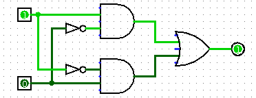
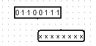
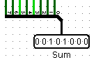
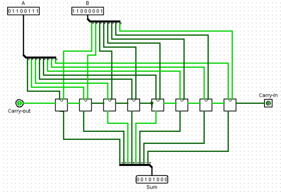
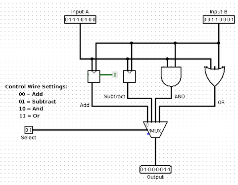

CPSC 220, Fall 2022
Lab 4: Getting Started with Logisim
The Logisim circuit simulation program was demonstrated in class. In this lab, you will be working in Logisim to create several basic combinational logic circuits. The end result will be a small ALU that can add and subtract and compute bitwise AND and OR for 8-bit numbers.
The lab is due next Thursday. You will save all of your work in a single Logisim file named lab4.circ. Turn in your work by copying that file into your homework folder in the directory /classes/cs220/homework.
Running Logisim
You can find a copy of logisim.jar in /classes/cs220. If you want to use it on your own computer, you can also find it at https://sourceforge.net/projects/circuit/; look for the big "Download" button near the top of the page. The program is an executable jar file, and it requires a JDK.
To run Logisim in Linux, you can right-click the icon for logisim.jar in /classes/cs220 and select "Open With OpenJDK Java 17 Runtime" from the popup menu. Alternatively, you can start it from the command line with the command java -jar /classes/cs220/logisim.jar.
Note that you can find an extensive "User Guide" and "Library Reference" in Logisim's "Help" menu. The "Library Reference" documents all the built-in circuit elements that are available in Logisim. The built-in circuit elements are listed in a component palette in the upper left section of the Logisim window. The most common are also available in the toolbar at the top of the window. For this lab, you are limited to using gates, wires, inputs, outputs, and splitters, except where specifically noted. You will be building some circuits that are equivalent to built-in Logicsim circuits, but you should build them yourself out of simpler components.
Exercise 1: XOR gate
For this exercise, you will build an XOR gate out of AND, OR, and NOT gates. Note that Logisim already has an XOR gate, but you should build your own. (This is essentially the "Tutorial" in the "Help" menu of the program, except that I am asking you to give a name to the circuit that you create.)
In Logisim, you can build a new circuit and give it a name. (Then you can use the circuits as components in other circuits. This allows you to build up complex circuits from simpler circuits, just like you make complex programs from simpler subroutines).
To start the exercise, create a new circuit, using the "Add Circuit" command in the "Project" menu. You will be asked for a circuit name. Enter XOR as the name of the new circuit for the first exercise. The circuit that you have created is added to the palette of circuit elements in the upper left portion of the window, under the name of the file that you are working in (probably "Untitled" at present). To view and edit a circuit that you have created, double-click its name in the list.
Logisim has three mouse tools, which have different functions. They are shown as icons on the left end of the toolbar. The right end of the toolbar shows five common circuit elements, input, output, NOT gate, AND gate, and OR gate:
The "poke" tool, which looks like a pointing hand, is for poking inputs to turn them on and off. You can also poke a wire to see the value on that wire. The "edit/select" tool, which looks like an arrow, allows you to add components to a circuit and to select existing elements in the circuit; this is the default tool. The "text" tool, which looks like an "A", is used to add strings of text to a circuit; just click with the text tool, and type something. Click existing text with the text tool to edit it. You can also click a component such as an input or output to add a label to that component.
Use the arrow tool to edit the circuit. To add a component to the circuit that you are editing, click the component in the toolbar or in the palette of circuit elements (with the arrow tool). Move the mouse to the place where you want to place the component and click again. (Do not drag the component. Click it and release the mouse, move the mouse, and click again.) For example, to add an AND gate, click the AND gate in the toolbar or in the component palette, move to the position where you want the AND gate, and click again.
The arrow tool is also used to add wires to the circuit. When the arrow tool is over a point where you can start drawing a wire, Logisim draws a small green circle around that point. Click and drag to draw the wire. In general, things that look like they are connected are in fact connected. (If you click a wire and release the mouse without dragging, the wire is selected. You can then drag the wire as a whole.)
There are several ways to make an XOR circuit from AND, OR, and NOT gates. If the inputs are A and B, then A XOR B can be computed as (A & ~B) | (B & ~A) You should build an XOR circuit following this formula. it will look like this:

Test that your circuit works by using the poke tool to click the two inputs. Try all four combinations of input, and make sure that the outputs are correct. (By default, AND and OR gates have 5 inputs, but Logisim only bases the computation on inputs that are actually connected to something, so extra, unconnected inputs are not a problem. But if this bothers you, you can change the number of inputs on a gate. You can also change its size. And remember that you can copy-and-paste gates that you have configured to your liking.)
Note: If you click on a component of the circuit with the edit/select tool, it will be selected. You can drag it, delete it, copy-and-paste it, and edit its properties. When a component is selected, the properties of the selected component are shown in the lower left section of the Logisim window, and you can change a property by clicking its value. For example, you can use a popup menu in the property list to make a gate to face in a different direction (alternatively, you can just hit one of the keyboard arrow keys while the component is selected). If you click and drag on the circuit to make a box around some components, all the components in the box are selected; you can then move, delete, or copy-and-paste all the selected components as a group.
You probably want to save your circuit at this point. Give it the name lab4.circ. (The name of a Logisim file should end with ".circ".) You should save your circuits frequently while you are working, and maybe even save several versions in different files along the way.
Exercise 2: One-bit Adder
For the next exercise, add another circuit using the "Add Circuit" command in the "Project" menu, and name it "Add-1". You will create an adder that can add three input bits (A, B, and Carry-in) and produce a Sum bit and a Carry-out bit as output. In class, we saw how to make an adder from two half-adders. You should arrange the inputs and outputs for the adder circuit as shown here:
When building a circuit, it is the direction that an input or output pin is facing that determines which side of the circuit it will appear on, when the circuit is used as a sub-circuit in another circuit. Make sure that A is facing South, Carry-out is facing East, and so on.
A half-adder can use an XOR gate. In your adder, you can use either the one that you built for Exercise 1 or the one that is built into Logisim. You don't necessarily have to build a separate half-adder circuit, but you can do that if you want.
Note: Please add labels to the inputs and outputs in this circuit, and in any non-trivial circuit that you make. It will make it easier to understand the circuit and remember what it does.
Exercise 3: Eight-bit Adder
For the third exercise, add another circuit to the project, using the name "Add-8". The purpose of the circuit is to take two eight-bit numbers and a one-bit carry-in and to produce an eight-bit sum and a one-bit carry-out as output. We saw in class how to construct multiple-bit adders from several one-bit adders. User eight copies of the Adder that you created for exercise 2.
 In Logisim, it is possible to have multi-bit inputs, multi-bit outputs, and wires that carry multiple bits of data. To make an eight-bit input, for example, add an input to your circuit, then change the value of the "Data Bits" property of the input to 8 (in the properties list in the lower left section of the window). An eight-bit input and an eight-bit output are shown at the right. The poke tool has been used to change the value of the input to 01100111. The values of the output bits are undefined, since the output is not connected to anything. You should use eight-bit inputs and outputs for your adder.
 But you need single-bit wires to feed into your individual Adder circuits. For that, you need a "Splitter". A Splitter splits a multi-bit bundle of wires into smaller bundles of wires or into individual wires. You can find "Splitter" in the "Wiring" section of the component palette. The picture at left shows a splitter connected to the multi-bit wire going into an 8-bit output; the splitter splits that 8-bit wire into 8 individual one-bit wires. In this case, the properties of the splitter have been set so that it is "Facing" North, has a "Bit Width In" of 8, and a "Fan Out" of 8. Each of the eight wires can be connected, for example, to the output from an Adder.
The Add-8 circuit that you build should look approximately as follows. Note that it must have a carry-in input. (We won't actually need the carry-out for the purposes of this lab.) It is shown here adding the number 01100111 to 11000001, with a carry-in of zero:

It can be touchy connecting all the wires! You will find that you need to release and re-press the mouse in the middle of dragging a wire in order to get two angles in the wire. I found it easier to drag from the adder to the splitter, instead of from the splitter to the adder. And be prepared to hit Control-Z a lot to undo missteps!
Exercise 4: Eight-bit Subtract
For this exercise, you should make an 8-bit subtraction circuit named "Subtract-8". This is easier than it might seem, since subtracting A−B is the same as adding A+(−B). However, −B can be computed by negating B and adding 1. This means that A+(−B) = A+(NOT B)+1.
To make a subtraction circuit, start by adding an 8-bit adder to the circuit. Add two 8-bit inputs and one 8-bit output. The first input can be directly connected to the first input of the adder. The output can be directly connected to the output from the adder. The only question is, what to do with the second input? How to handle the "(NOT B)+1"?
We actually have a nice way to deal with the +1 at the end: The adder circuit has a carry-in input. By connecting a constant value 1 to the adder's carry-in, we can add the final 1 that we need for subtraction. Logisim has a component called a "Constant" listed under wiring. Add a Constant to your subtraction circuit, set its value to 0x1, and connect it to the carry-in input of the adder.
Using the carry-in to add the extra 1, the second input to the subtraction circuit only needs to be NOTed. You can do that by passing it thorough a single NOT gate whose "Data Bits" property has been set to 8. The output of the NOT connects to the second input of the adder. Once you've done that, you should have a working subtraction circuit. It is not necessary to connect the carry-out of the adder to anything.
Exercise 5: Tiny ALU
For this exercise, you should build a tiny ALU. You can construct it in the circuit named "main" that was originally the only circuit listed in the Logisim window. To edit it, double-click on "main" in the list of circuits in the upper left portion of the window.
An ALU (arithmetic-logic unit) in a computer performs arithmetic and logical operations on numbers. The same ALU can perform several different operations, and it has control wire inputs to tell it which operation to perform.
The ALU that you build for this exercise will do four operations on 8-bit numbers: Add, Subtract, And, and Or. To select which operation to perform, there will be two wires, which can be represented by one 2-bit input. If the control wires are set to 00, the ALU should add its two inputs; if they are set to 01, the ALU should subtract; if they are set to 10, it should apply AND; and if they are set to 11, it should apply OR.
To add and subtract numbers in your ALU, you can use the 8-bit adder and the 8-bit subtracter that you created earlier in the lab.
I won't force you to build your own 8-bit OR circuit and an 8-bit AND circuit. In fact, you can simply use Logisim's OR and AND gates. One of the properties of a gate in Logisim is the number of "Data Bits." By setting that property to 8, you get a gate that can be connected to 8-bit inputs and outputs. In effect, an AND gate with 8 data bits is made up internally of 8 one-bit AND gates. It computes the bitwise logical AND of its two 8-bit inputs. So, you can use one of Logisim's AND gates, with its "Data Bits" property set to 8, as the 8-bit AND circuit in your ALU. Similarly for the OR circuit.
The funny thing about an ALU is that it actually performs all of its operations in all cases. The control wires just determine which of the results gets to the output. What you need here is a multiplexor. In this case, you can use the Multiplexor component that is built into Logisim; you will find it in the "Plexors" section of the component palette. (Alternatively, of course, you could build the multiplexor that you need from basic gates; we saw in class how that is done.) Here is what my ALU looks like:

Don't forget to test all of your circuits to make sure that they are working correctly before you turn in your file!
The ALU that you have built contains two 8-bit adders (one inside the subtraction circuit). It is possible to build an ALU with only one adder, which does both addition and subtraction. The carry-in of the adder must be 0 for addition and 1 for subtraction. The second 8-bit input to the adder must be NOTed when doing subtraction, but not when doing addition. You have to use the control wires to make sure that the inputs to the adder are set correctly both for addition and for subtraction. Build a second ALU using these ideas for a little extra credit.
(Note: I sometimes find Logisim giving me blue "error" wires, sometimes because they haven't been connected yet, but sometimes it seems like it does this for no reason at all. If there is not an actual problem with the circuit, you can try this: Give the "Reset Simulation" command (Control-R, or find it in the "Simulate" menu). Try turning simulation off and on, using Control-E (or "Enable Simulation" in the "Simulate" menu). And make sure that you haven't accidentally added a wire that connects one input in a circuit to another input, which I've done sometimes and which can be very hard to see.)